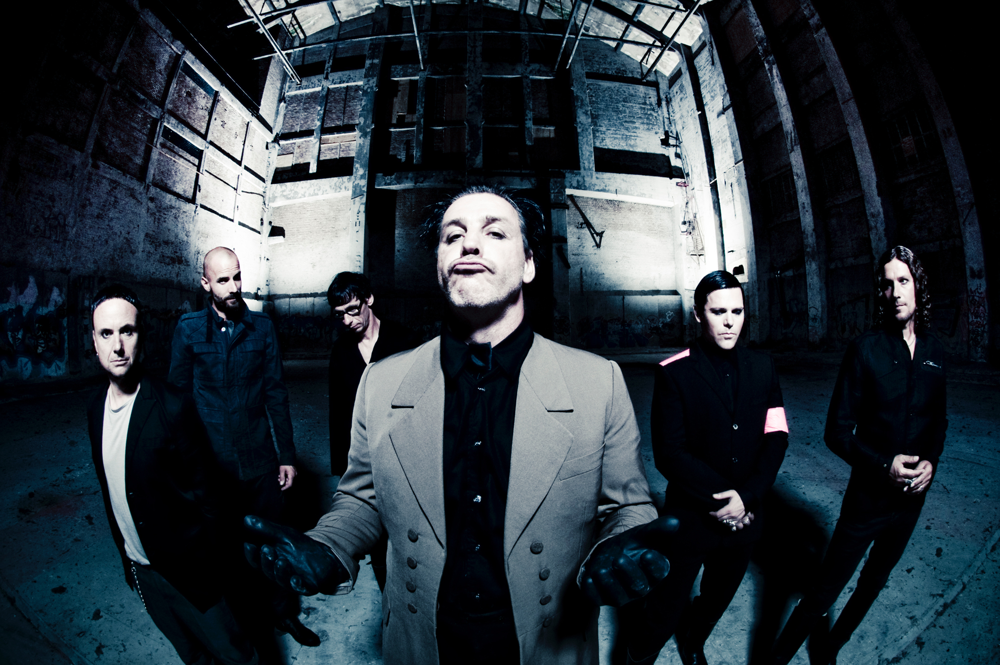
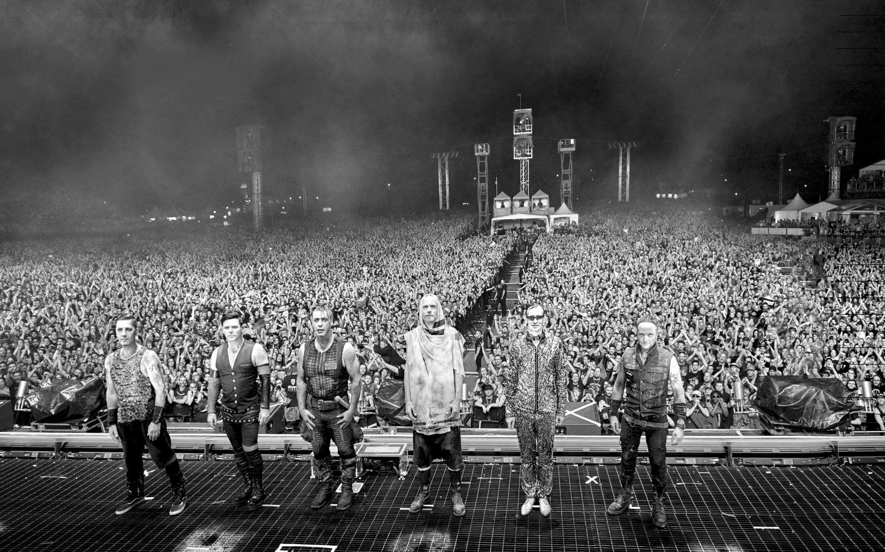

Подробности тура Rammvier
История группы
Итак, восьмидесятые годы, Германская Демократическая Республика: Берлинская стена, железный занавес — место, прямо-таки созданное для подавления любого артистического и творческого самовыражения. Разделенные семьи, тотальный контроль под неусыпным оком Штази (местный КГБ), свой комсомол и так далее. Воспоминания одного из участников группы: «Дома мы могли получать лишь случайную информацию о больших западных рок-группах. Мы не имели пластинок, а записи если и доходили до нас, то во второй-третьей копии». Не правда ли, что-то знакомое всем россиянам старше 30?
Группа, впоследствии названная Rammstein, была образована в начале 1993 года Рихардом Круспе, Тиллем Линдеманном и Кристофом Шнайдером.
Преданному поклоннику Rammstein наверняка интересно узнать об истоках творчества брутальных немцев. Попробуем хотя бы отчасти удовлетворить этот справедливый интерес, погрузившись в до-раммштайновское жизнеописание каждого из участников коллектива.
Музыкальная тусовка в Шверине была немногочисленной, поэтому, понятное дело, все там друг друга знали. Знали не только своих ребят, но и берлинских. Дружили, вместе пили и играли, ездили друг к другу в гости. Тилль пользовался особым уважением, во-первых, по причине своей молчаливости и полнейшей бесконфликтности, а во-вторых, потому что был одним из немногих, кто имел собственное жилье (где, соответственно, можно было оттягиваться без тормозов) и, что немаловажно, транспорт, на котором можно было разъезжать на тусовки. Кроме того, чистый воздух и деревенские просторы так и влекли к Тиллю многочисленных друзей. Татьяна Бессон (группа Die Firma) вспоминает: «Мы были с Тиллем Линдеманном приятелями, его дом находился в деревне, и мы часто его навещали. Он плел корзины в будке путевого обходчика, там же мы могли репетировать. А потом гуляли часами неподалеку в птичьем заповеднике в полной тишине».
Увлечение музыкой, начавшееся с подражания любимым KISS, постепенно начало перерастать в нечто большее: «Мне было двенадцать, и я постоянно слушал музыку — слева от меня стоял проигрыватель, справа — магнитофон, посередине сидел я и всему этому подпевал. Однажды понял, что у меня есть талант. Тогда я начал упражняться: два года подряд, около шести часов каждый день». Способности Рихарда отмечала и его школьная учительница музыки, которая считала, что у мальчика хорошее чувство ритма и его надо отдать в музыкальную школу.